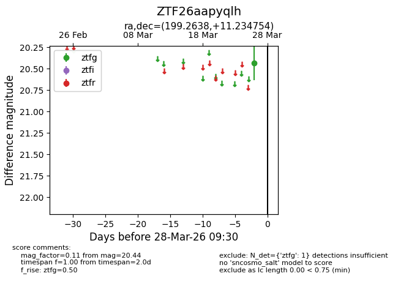
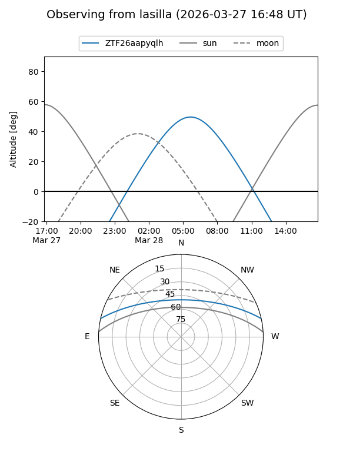
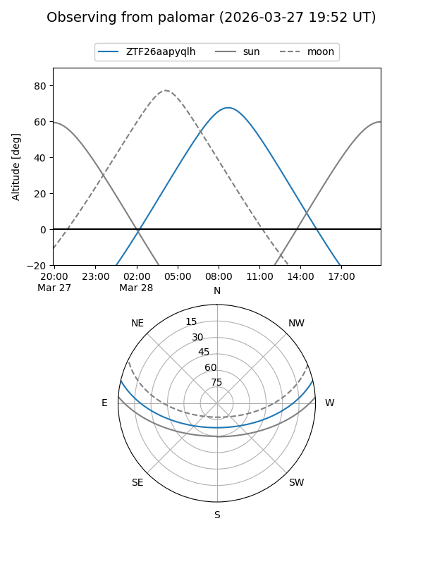

ZTF26aapyqlh
Target ZTF26aapyqlh at 2026-03-28 09:33
Aliases and brokers:
FINK: link
Lasair: link
ALeRCE: link
alt names
ZTF26aapyqlh (ztf,fink_ztf)
Coordinates:
equatorial (ra, dec) = 199.2638,+11.23475
equatorial (HMS+DMS) = 13:17:03.31,+11:14:05.11
galactic (l, b) = (324.9122,+73.00394)
Flags:
Photometry:
last ztfg=20.44
1 ztfg detections
Lightcurve

Visibility


Additional plots